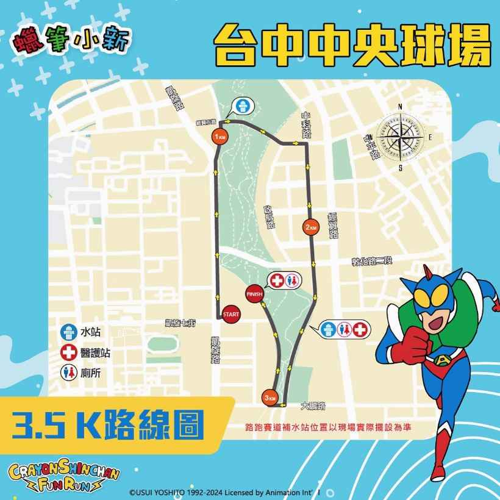
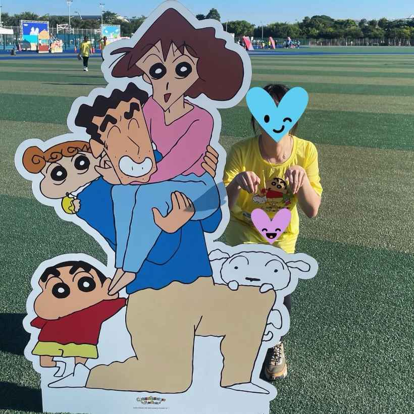
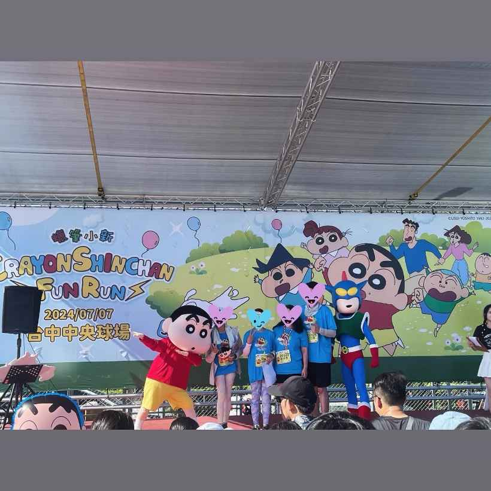
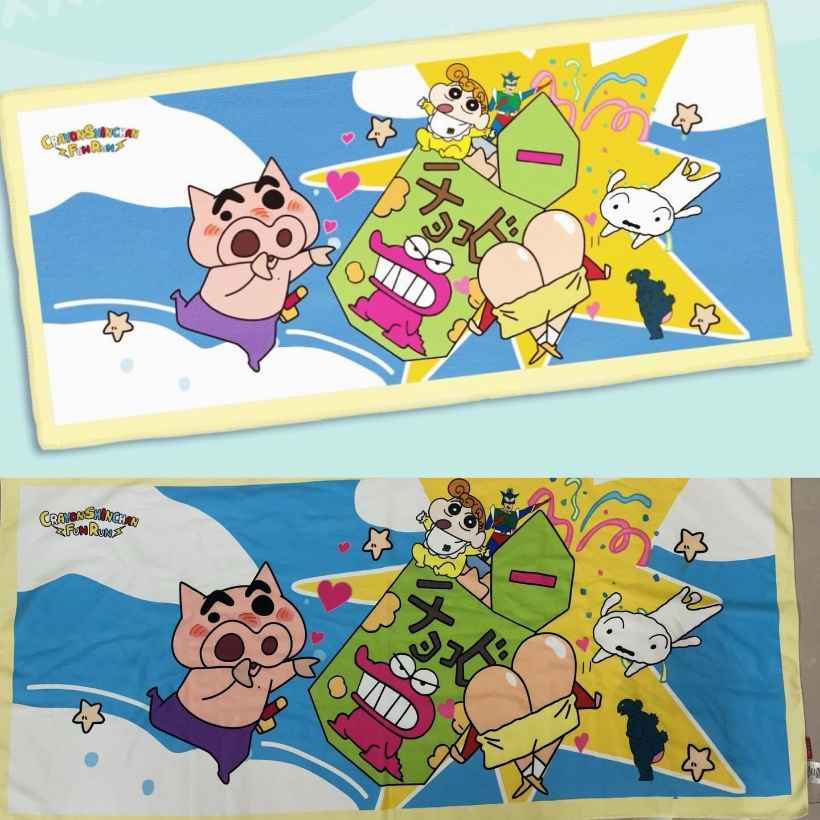

嗨囉🤪
我們是Hungryforest🌳
這是一篇熱騰騰的文章🔥
今天早上小編去參加的活動🏃♀️

《蠟筆小新路跑——台中場》
🌟健走還是路跑🌟
小編們今天起惹個大早，和朋朋一起去路跑🏃雖然說是路跑，但其實走路的人比跑步的人還要多🤣這次是辦在中央公園，主辦單位路線規劃的不錯，就是繞公園一圈，總共3.5公里，路很平穩，缺點就是沒什麼樹蔭，7月參加路跑，真的是太陽地獄🙈🙈🙈

活動現場有提供免費的冷水、舒跑、檸檬水！算是蠻用心的，不然真的會中暑🥵
現場有很多可愛的蠟筆小新系列看板可以拍照，小編很後悔沒有在開跑前多拍一點，本來想說跑完再慢慢拍，結果跑完就累+熱癱🫠那舞台上也有舉辦有獎徵答，會問一些蠟筆小新的相關問題，答對就可以獲得與蠟筆小新/動感超人拍照的機會😁


在報名的時候分成兩個組別，新之助選手組 和 動感fun組，價錢差了約莫2倍，送的東西也有差～小編只是來體驗一下路跑，試試水溫，所以是新之助選手組😎有附紀念上衣（藍/黃 選一），穿起來很涼很可愛🥰屁屁抱枕超級可愛，比想像中還要大！！！手機掛繩、浴巾～～～本來一直在後悔參加路跑，但拿到這些東西後，突然覺得，嗯，可以參加，太可愛惹❤️❤️❤️但真的開始跑的時候，又後悔惹🤣跑完還可以領完賽證明、蠟筆小新樣式小獎牌🏅

就是很謝謝找我們參加路跑的朋朋們，不然小編的人生不可能有這麼健康的活動🙃但試過一次就好惹🤣🤣🤣
最後，如果之後有相關的活動，是推薦大家可以報名的呦！東西可愛，而且很健康💪💪💪雖然小編真的沒辦法再跑一次🥲